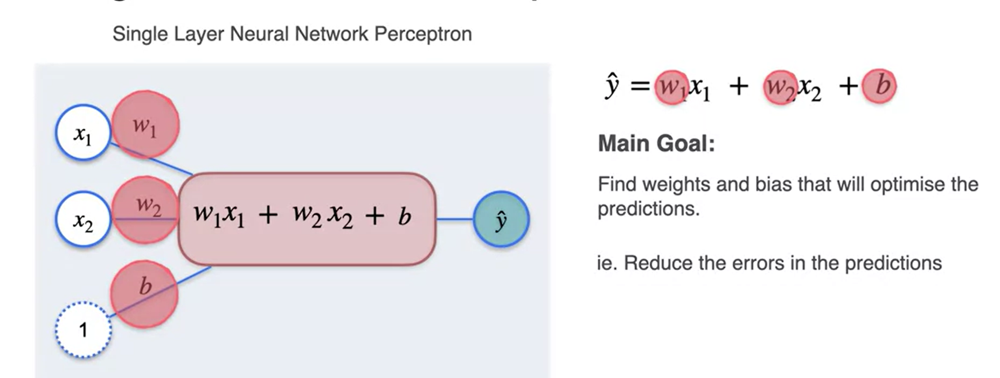
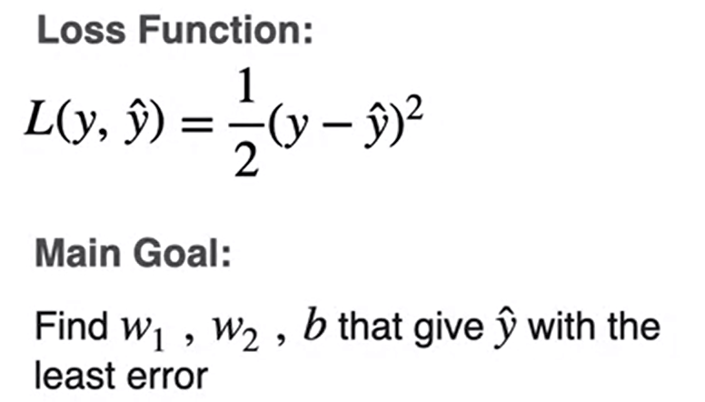
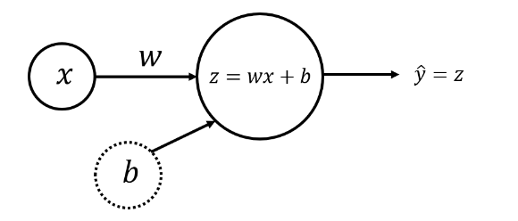

Módulo 3: Otimização em redes neurais e método de Newton
Otimização em redes neurais
Regressão com um único perceptron


Regressão com Perceptron
Primeiro vamos importar os pacotes necessários.
import numpy as np
import matplotlib.pyplot as plt
# Uma biblioteca para manipulação e análise de dados.
import pandas as pd
# A saída dos comandos de plotagem é exibida em linha no notebook Jupyter.
%matplotlib inline
# Defina uma semente para que os resultados sejam consistentes.
np.random.seed(3) Modelo de regressão linear simples
Você pode descrever um modelo de regressão linear simples como
\[ \hat{y} = wx + b,\tag{1} \]
em que \(\hat{y}\) é uma previsão da variável dependente \(y\) com base na variável independente \(x\) usando uma equação de linha com a inclinação \(w\) e a interceptação \(b\).
Dado um conjunto de pontos de dados de treinamento \((x_1, y_1)\), …, \((x_m, y_m)\), você encontrará a “melhor” linha de ajuste - parâmetros \(w\) e \(b\) que as diferenças entre os valores originais \(y_i\) e os valores previstos \(\hat{y}_i = wx_i + b\) sejam mínimas.
Modelo de rede neural com um único Perceptron e um nó de entrada
O modelo de rede neural mais simples que descreve o problema acima pode ser realizado com o uso de um perceptron. As camadas de entrada e saída terão um nó cada (\(x\) para entrada e \(\hat{y} = z\) para saída):

Weight (\(w\)) e bias (\(b\)) são os parâmetros que serão atualizados quando você treinar o modelo. Eles são inicializados com alguns valores aleatórios ou definidos como 0 e atualizados à medida que o treinamento avança.
Para cada exemplo de treinamento \(x^{(i)}\), a previsão \(\hat{y}^{(i)}\) pode ser calculada como:
\[ \begin{align} z^{(i)} &= w x^{(i)} + b,\\ \hat{y}^{(i)} &= z^{(i)}, \tag{2} \end{align} \]
onde \(i = 1, \dots, m\).
Você pode organizar todos os exemplos de treinamento como um vetor \(X\) de tamanho (\(1 \times m\)) e realizar a multiplicação escalar de \(X\) (\(1 \times m\)) por um escalar \(w\), adicionando \(b\), que será transmitido para um vetor de tamanho (\(1 \times m\)):
\[ \begin{align} Z &= w X + b,\\\ \hat{Y} &= Z, \tag{3}\end{align} \]
Esse conjunto de cálculos é chamado de propagação direta.
Para cada exemplo de treinamento, você pode medir a diferença entre os valores originais \(y^{(i)}\) e os valores previstos \(\hat{y}^{(i)}\) com a função loss \(L\left(w, b\right) = \frac{1}{2}\left(\hat{y}^{(i)} - y^{(i)}\right)^2\). A divisão por \(2\) é feita apenas para fins de escala; você verá o motivo abaixo, calculando as derivadas parciais. Para comparar o vetor resultante das previsões \(\hat{Y}\) (\(1 \times m\)) com o vetor \(Y\) dos valores originais \(y^{(i)}\), você pode obter uma média dos valores da função de perda para cada um dos exemplos de treinamento:
\[ \mathcal{L}\left(w, b\right) = \frac{1}{2m}\sum_{i=1}^{m} \left(\hat{y}^{(i)} - y^{(i)}\right)^2.\tag{4} \]
Essa função é chamada de soma de quadrados função de custo. O objetivo é otimizar a função de custo durante o treinamento, o que minimizará as diferenças entre os valores originais \(y^{(i)}\) e os valores previstos \(\hat{y}^{(i)}\).
Quando os pesos foram inicializados apenas com alguns valores aleatórios e nenhum treinamento foi feito, não é possível esperar bons resultados. Você precisa calcular os ajustes para o peso e a polarização, minimizando a função de custo. Esse processo é chamado de propagação para trás.
De acordo com o algoritmo de descida de gradiente, você pode calcular as derivadas parciais como:
\[ \begin{align} \frac{\partial \mathcal{L} }{ \partial w } &= \frac{1}{m}\sum_{i=1}^{m} \left(\hat{y}^{(i)} - y^{(i)}\right)x^{(i)},\\ \frac{\partial \mathcal{L} }{ \partial b } &= \frac{1}{m}\sum_{i=1}^{m} \left(\hat{y}^{(i)} - y^{(i)}\right). \tag{5}\end{align} \]
Você pode ver como a divisão adicional por \(2\) na equação \((4)\) ajudou a simplificar os resultados das derivadas parciais. Em seguida, atualize os parâmetros iterativamente usando as expressões
\[ \begin{align} w &= w - \alpha \frac{\partial \mathcal{L} }{ \partial w },\\ b &= b - \alpha \frac{\partial \mathcal{L} }{ \partial b }, \tag{6}\end{align} \]
em que \(\alpha\) é a taxa de aprendizado. Em seguida, repita o processo até que a função de custo pare de diminuir.
A metodologia geral para construir uma rede neural é:
Definir a estrutura da rede neural (número de unidades de entrada, número de unidades ocultas, etc.).
Inicializar os parâmetros do modelo
Fazer um loop: - Implementar a propagação para frente (calcular a saída do perceptron), - Implementar a propagação para trás (para obter as correções necessárias para os parâmetros), - Atualizar os parâmetros.
Fazer previsões.
Geralmente, você cria funções auxiliares para calcular as etapas de 1 a 3 e depois as mescla em uma função nn_model(). Depois de criar nn_model() e aprender os parâmetros corretos, você pode fazer previsões com novos dados.
1.3 - Conjunto de dados
Carregue (Conjunto de dados), salvo em um arquivo data/tvmarketing.csv. Ele tem dois campos: Despesas de marketing de TV (TV) e valor das vendas (Sales).
path = "data/tvmarketing.csv"
adv = pd.read_csv(path)Criando gráfico
adv.plot(x='TV', y='Sales', kind='scatter', c='black')Os campos TV e Sales têm unidades diferentes. Para tornar o algoritmo de descida de gradiente eficiente, precisamos normalizar cada um deles: subtrair o valor médio da matriz de cada um dos elementos da matriz e dividi-los pelo desvio padrão.
A normalização do conjunto de dados por coluna pode ser feita para todos os campos de uma só vez e é implementada no código a seguir:
adv_norm = (adv - np.mean(adv))/np.std(adv)
# gráfico
adv_norm.plot(x='TV', y='Sales', kind='scatter', c='black')Renomeando as variáveis
X_norm = adv_norm['TV']
Y_norm = adv_norm['Sales']
X_norm = np.array(X_norm).reshape((1, len(X_norm)))
Y_norm = np.array(Y_norm).reshape((1, len(Y_norm)))
print ('The shape of X_norm: ' + str(X_norm.shape))
print ('The shape of Y_norm: ' + str(Y_norm.shape))
print ('I have m = %d training examples!' % (X_norm.shape[1]))Implementação do modelo de rede neural para regressão linear
Configure a rede neural de forma que seja possível estender esse caso simples de um modelo com um único perceptron e um nó de entrada para estruturas mais complicadas posteriormente.
Definição da estrutura da rede neural
Defina duas variáveis:
n_x: o tamanho da camada de entradan_y: o tamanho da camada de saída
usando formas de matrizes X e Y.
def layer_sizes(X, Y):
"""
Arguments:
X -- input dataset of shape (input size, number of examples)
Y -- labels of shape (output size, number of examples)
Returns:
n_x -- the size of the input layer
n_y -- the size of the output layer
"""
n_x = X.shape[0]
n_y = Y.shape[0]
return (n_x, n_y)
(n_x, n_y) = layer_sizes(X_norm, Y_norm)
print("The size of the input layer is: n_x = " + str(n_x))
print("The size of the output layer is: n_y = " + str(n_y))Inicializar os parâmetros do modelo
Implemente a função initialize_parameters(), inicializando o vetor de pesos de forma \((n_y \times n_x) = (1 \times 1)\) com valores aleatórios e o vetor de polarização de forma \((n_y \times 1) = (1 \times 1)\) com zeros
def initialize_parameters(n_x, n_y):
"""
Returns:
params -- python dictionary containing your parameters:
W -- weight matrix of shape (n_y, n_x)
b -- bias value set as a vector of shape (n_y, 1)
"""
W = np.random.randn(n_y, n_x) * 0.01
b = np.zeros((n_y, 1))
parameters = {"W": W,
"b": b}
return parameters
parameters = initialize_parameters(n_x, n_y)
print("W = " + str(parameters["W"]))
print("b = " + str(parameters["b"]))Loop
Implemente forward_propagation() seguindo a equação \((3)\) na seção 1.2:
\[ \begin{align} Z &= w X + b\\ \hat{Y} &= Z, \end{align} \]
def forward_propagation(X, parameters):
"""
Argument:
X -- input data of size (n_x, m)
parameters -- python dictionary containing your parameters (output of initialization function)
Returns:
Y_hat -- The output
"""
W = parameters["W"]
b = parameters["b"]
# Forward Propagation to calculate Z.
Z = np.matmul(W, X) + b
Y_hat = Z
return Y_hat
Y_hat = forward_propagation(X_norm, parameters)
print("Some elements of output vector Y_hat:", Y_hat[0, 0:5])Seus pesos acabaram de ser inicializados com alguns valores aleatórios, portanto, o modelo ainda não foi treinado.
Defina uma função de custo \((4)\) que será usada para treinar o modelo:
\[ \mathcal{L}\left(w, b\right) = \frac{1}{2m}\sum_{i=1}^{m} \left(\hat{y}^{(i)} - y^{(i)}\right)^2 \]
def compute_cost(Y_hat, Y):
"""
Computes the cost function as a sum of squares
Arguments:
Y_hat -- The output of the neural network of shape (n_y, number of examples)
Y -- "true" labels vector of shape (n_y, number of examples)
Returns:
cost -- sum of squares scaled by 1/(2*number of examples)
"""
# Number of examples.
m = Y_hat.shape[1]
# Compute the cost function.
cost = np.sum((Y_hat - Y)**2)/(2*m)
return cost
print("cost = " + str(compute_cost(Y_hat, Y_norm)))Calcule as derivadas parciais conforme mostrado em \((5)\):
\[ \begin{align} \frac{\partial \mathcal{L} }{ \partial w } &= \frac{1}{m}\sum_{i=1}^{m} \left(\hat{y}^{(i)} - y^{(i)}\right)x^{(i)},\\ \frac{\partial \mathcal{L} }{ \partial b } &= \frac{1}{m}\sum_{i=1}^{m} \left(\hat{y}^{(i)} - y^{(i)}\right). \end{align} \]
def backward_propagation(Y_hat, X, Y):
"""
Implements the backward propagation, calculating gradients
Arguments:
Y_hat -- the output of the neural network of shape (n_y, number of examples)
X -- input data of shape (n_x, number of examples)
Y -- "true" labels vector of shape (n_y, number of examples)
Returns:
grads -- python dictionary containing gradients with respect to different parameters
"""
m = X.shape[1]
# Backward propagation: calculate partial derivatives denoted as dW, db for simplicity.
dZ = Y_hat - Y
dW = 1/m * np.dot(dZ, X.T)
db = 1/m * np.sum(dZ, axis = 1, keepdims = True)
grads = {"dW": dW,
"db": db}
return grads
grads = backward_propagation(Y_hat, X_norm, Y_norm)
print("dW = " + str(grads["dW"]))
print("db = " + str(grads["db"]))Atualize os parâmetros conforme mostrado em \((6)\):
\[ \begin{align} w &= w - \alpha \frac{\partial \mathcal{L} }{ \partial w },\\ b &= b - \alpha \frac{\partial \mathcal{L} }{ \partial b }. \end{align} \]
def update_parameters(parameters, grads, learning_rate=1.2):
"""
Updates parameters using the gradient descent update rule
Arguments:
parameters -- python dictionary containing parameters
grads -- python dictionary containing gradients
learning_rate -- learning rate parameter for gradient descent
Returns:
parameters -- python dictionary containing updated parameters
"""
# Retrieve each parameter from the dictionary "parameters".
W = parameters["W"]
b = parameters["b"]
# Retrieve each gradient from the dictionary "grads".
dW = grads["dW"]
db = grads["db"]
# Update rule for each parameter.
W = W - learning_rate * dW
b = b - learning_rate * db
parameters = {"W": W,
"b": b}
return parameters
parameters_updated = update_parameters(parameters, grads)
print("W updated = " + str(parameters_updated["W"]))
print("b updated = " + str(parameters_updated["b"]))Modelo de rede neural
def nn_model(X, Y, num_iterations=10, learning_rate=1.2, print_cost=False):
"""
Arguments:
X -- dataset of shape (n_x, number of examples)
Y -- labels of shape (n_y, number of examples)
num_iterations -- number of iterations in the loop
learning_rate -- learning rate parameter for gradient descent
print_cost -- if True, print the cost every iteration
Returns:
parameters -- parameters learnt by the model. They can then be used to make predictions.
"""
n_x = layer_sizes(X, Y)[0]
n_y = layer_sizes(X, Y)[1]
parameters = initialize_parameters(n_x, n_y)
# Loop
for i in range(0, num_iterations):
# Forward propagation. Inputs: "X, parameters". Outputs: "Y_hat".
Y_hat = forward_propagation(X, parameters)
# Cost function. Inputs: "Y_hat, Y". Outputs: "cost".
cost = compute_cost(Y_hat, Y)
# Backpropagation. Inputs: "Y_hat, X, Y". Outputs: "grads".
grads = backward_propagation(Y_hat, X, Y)
# Gradient descent parameter update. Inputs: "parameters, grads, learning_rate". Outputs: "parameters".
parameters = update_parameters(parameters, grads, learning_rate)
# Print the cost every iteration.
if print_cost:
print ("Cost after iteration %i: %f" %(i, cost))
return parameters
###############################################################################
parameters_simple = nn_model(X_norm, Y_norm, num_iterations=30, learning_rate=1.2, print_cost=True)
print("W = " + str(parameters_simple["W"]))
print("b = " + str(parameters_simple["b"]))
W_simple = parameters["W"]
b_simple = parameters["b"]Você pode ver que, após algumas iterações, a função de custo não se altera mais (o modelo converge).
Observação: Esse é um modelo muito simples. Na realidade, os modelos não convergem tão rapidamente.
Os parâmetros finais do modelo podem ser usados para fazer previsões, mas não se esqueça da normalização e da desnormalização.
def predict(X, Y, parameters, X_pred):
# Retrieve each parameter from the dictionary "parameters".
W = parameters["W"]
b = parameters["b"]
# Use the same mean and standard deviation of the original training array X.
if isinstance(X, pd.Series):
X_mean = np.mean(X)
X_std = np.std(X)
X_pred_norm = ((X_pred - X_mean)/X_std).reshape((1, len(X_pred)))
else:
X_mean = np.array(np.mean(X)).reshape((len(X.axes[1]),1))
X_std = np.array(np.std(X)).reshape((len(X.axes[1]),1))
X_pred_norm = ((X_pred - X_mean)/X_std)
# Make predictions.
Y_pred_norm = np.matmul(W, X_pred_norm) + b
# Use the same mean and standard deviation of the original training array Y.
Y_pred = Y_pred_norm * np.std(Y) + np.mean(Y)
return Y_pred[0]
X_pred = np.array([50, 120, 280])
Y_pred = predict(adv["TV"], adv["Sales"], parameters_simple, X_pred)
print(f"TV marketing expenses:\n{X_pred}")
print(f"Predictions of sales:\n{Y_pred}")Plot
fig, ax = plt.subplots()
plt.scatter(adv["TV"], adv["Sales"], color="black")
plt.xlabel("$x$")
plt.ylabel("$y$")
X_line = np.arange(np.min(adv["TV"]),np.max(adv["TV"])*1.1, 0.1)
Y_line = predict(adv["TV"], adv["Sales"], parameters_simple, X_line)
ax.plot(X_line, Y_line, "r")
ax.plot(X_pred, Y_pred, "bo")
plt.plot()
plt.show()